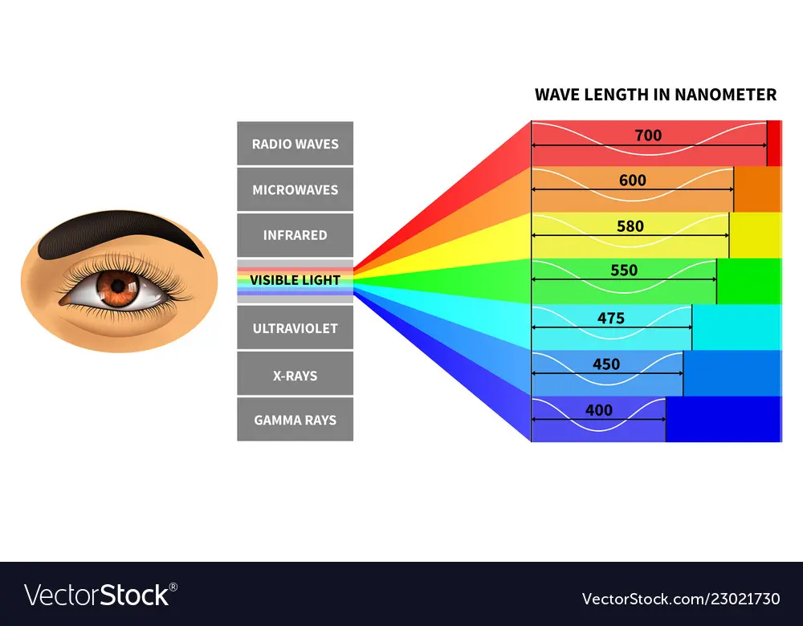

[English Below]
ពន្លឺដែលយើងឃើញត្រូវបានគេហៅថា "Visible Light (ពន្លឺដែលមើលឃើញ)" ហើយវាមាននៅក្នុងវិសាលគមហៅថា "វិសាលគមអេឡិចត្រូម៉ាញេទិច" រួមជាមួយនឹងរលកវិទ្យុ កាំរស្មីអ៊ិច ពន្លឺអ៊ីនហ្វ្រារ៉េដ ជាដើម។ ទោះបីជាពន្លឺធ្វើដំណើរយ៉ាងងាយស្រួលតាមរយៈវត្ថុថ្លាដូចជាកញ្ចក់ក៏ដោយ ពន្លឺភាគច្រើនមិនអាចឆ្លងកាត់វត្ថុឃ្មឹកដូចជាក្រដាសនោះទេ។ នៅពេលដែលយើងឈានទៅមុខបន្ថែមទៀតនៅក្នុងវិស័យនៃ Quantum Mechanics យើងនឹងមកតាមរយៈទ្រឹស្តីរបស់ Issac Newton ដែលគាំទ្រពន្លឺមានភាគល្អិតតូចៗហៅថា "Corpuscle" គំនិតរបស់ Thomas Young និង Christaan Huygens លើអាកប្បកិរិយាដូចរលកនៃពន្លឺតាមរយៈការបង្វែរ និង ការពិសោធន៍បាតុភូត photoelectric របស់Albert Einstein ដែលបានគាំទ្រពន្លឺថាជាភាគល្អិតហៅថា "Photon" រីឯលំហនៃPhoton គឺជារលក។ដូច្នេះបើគេសួរអ្នកពន្លឺជាភាពល្អិតorរលក?
ចម្លើយ: ទាំងពីរ
-នៅក្នុងVisible Light មានពណ៍ចំនួន7គឺ
-លឿង>,
-ខៀវ
-ក្រហម
-ស្វាយ
-បៃតង
-Violet
។ រីឯពណ៍ស គឺជាការលាយពណ៌ទាំង៧បញ្ចូលគ្នា(មានព្រីសជាភស្តុតាង)។
ពណ៍ខ្មៅជាអវត្តមាននៃពន្លឺ។គួរបញ្ជាក់ផងដែរថា:ល្បឿននៃពន្លឺជាល្បឿនដែលលឿនជាងគេ។
